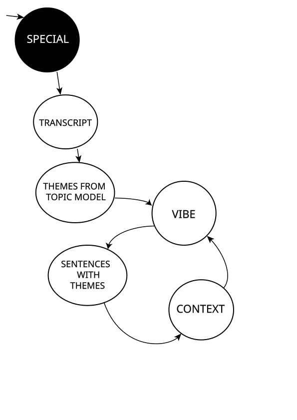
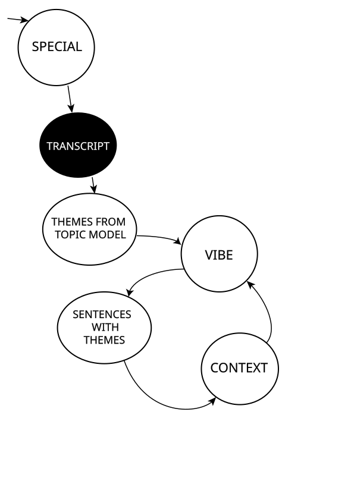
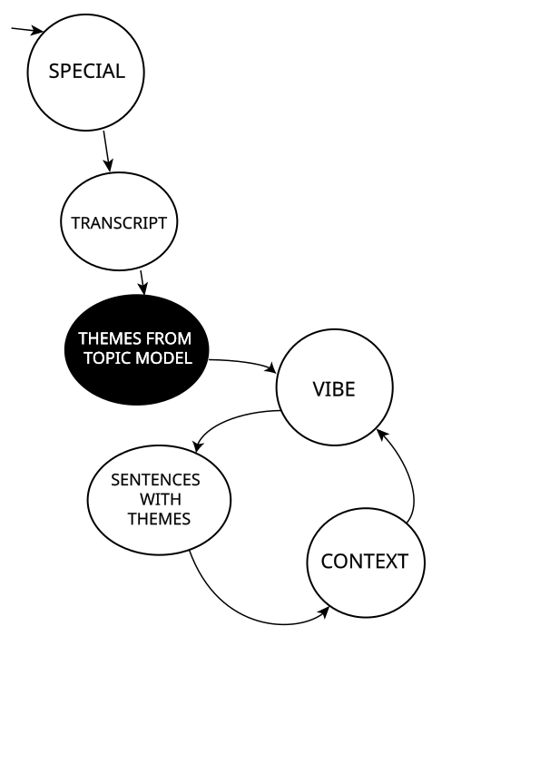
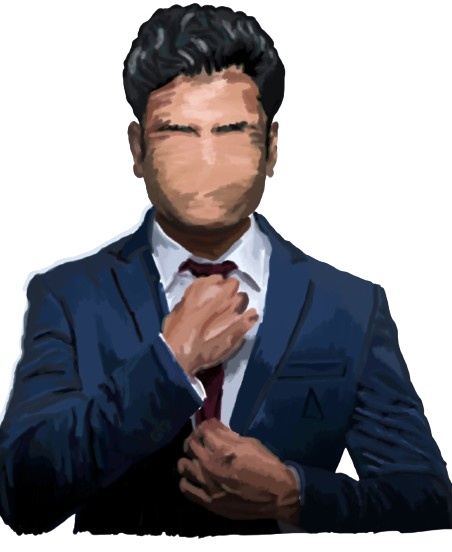
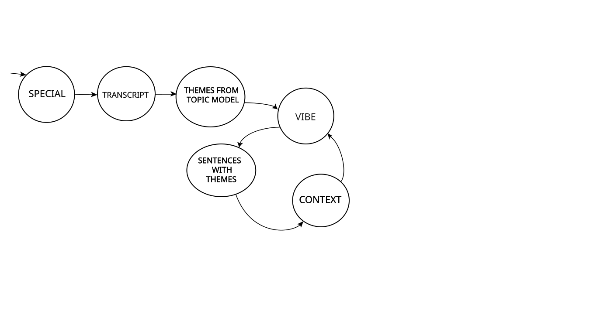

We were trying to flesh out a data story about the cyclical nature of societal commentary on the Internet (good then bad then good then bad again), when it occurred to us that an interesting corpus to use to test that theory was recent stand up comedy. We felt like a lot of recent stand up comedy involved anecdotal recounts of things experienced or observed on the Internet. That idea soon turned into a quest to use stand-up comedy to illustrate which aspects of the contemporary experience transcended cultural differences: specifically looking at American stand-up, where Hayley is from, and Indian stand-up, where Alisha is from.





post scrolly web